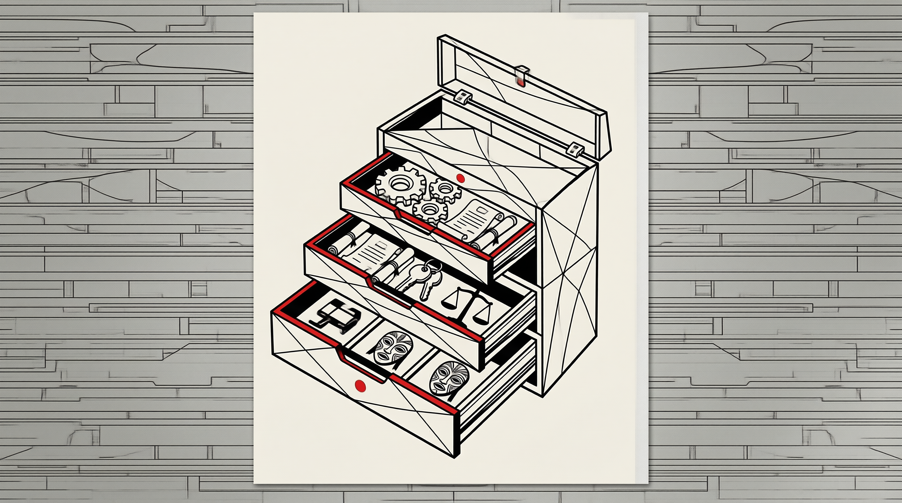

经济增长
通过创造新资源，突破稀缺性的结构性约束
技术规训
用区块链与 Docker 实现虚拟世界的排他性控制
法律法规
GPL copyleft 构建法律层面的共享与约束框架
道德戒律
倡导 Give back 精神，维系共同体信任与互惠
文化习俗
分叉文化避免单点失效，多版本并行演化共存
当我们将公地治理视为工具箱而非宿命判决，就能发现人类文明积累了丰富应对策略，开源运动正是这些古老智慧在数字时代的创造性应用。

工具箱里的古老智慧 · 抽屉中的数字密码